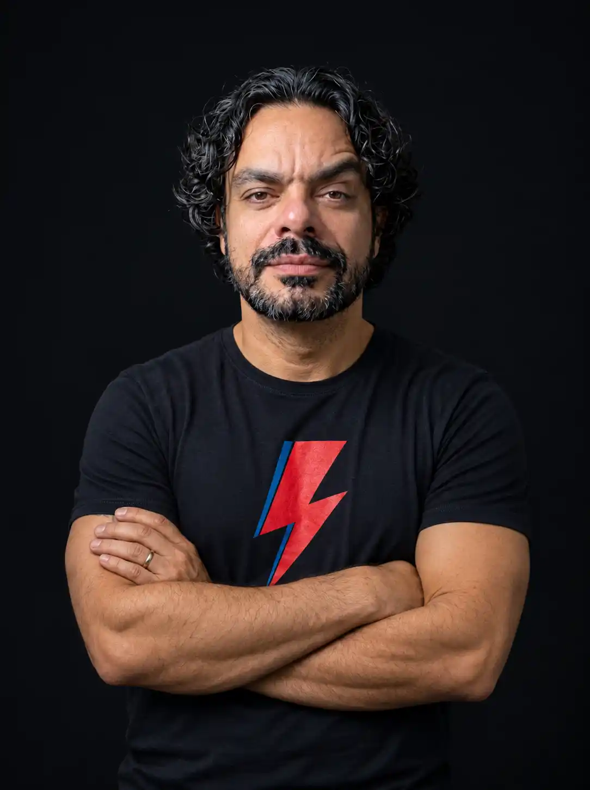

01 / PERFORMANCE
O sinal que atravessa o ruído.
Organizo sites, conteúdos e informações para que pessoas e mecanismos de busca consigam chegar até você sem perder o caminho.
Afinar a presença ↗PESSOAS · BUSCAS · INTELIGÊNCIA ARTIFICIAL
As pessoas já não procuram apenas links. Elas também fazem perguntas às IAs. Eu conecto estratégia, conteúdo e tecnologia para ajudar sua marca a ser encontrada, compreendida e escolhida.

WENDELL SOARES ESTRATÉGIA AUTORAL PESSOAS. CONTEÚDO. TECNOLOGIA.Um site não vive sozinho. Um bom texto precisa de contexto. Uma marca só ganha autoridade quando seus sinais estão em sintonia.
Minha atuação conecta o que você diz, como é encontrado e a experiência de quem chega até você.
Conheça os três pilares ↗Organizo sites, conteúdos e informações para que pessoas e mecanismos de busca consigam chegar até você sem perder o caminho.
Afinar a presença ↗Transformo informação em páginas, narrativas e experiências que ajudam seu público a entender o valor da sua oferta e dar o próximo passo.
Encontrar o tom ↗Construo presença coerente e repertório público verificável, para seu nome ter contexto, credibilidade e reconhecimento.
Construir reconhecimento ↗A próxima pergunta sobre sua área pode acontecer no Google, numa rede social ou dentro de uma IA. Sua marca precisa ter uma resposta clara, consistente e verdadeira.
MENOS RUÍDO. MAIS RESSONÂNCIA.Sem siglas desnecessárias. Explore os serviços, veja o que cada um resolve e monte uma seleção para conversar sobre seu projeto.
Três caminhos comuns para quem quer transformar presença digital em oportunidades reais.
Site, páginas de campanha, velocidade, imagens e organização para buscadores e sistemas de IA.
Ver soluções de presença ↗Textos de vendas, artigos, LinkedIn, blog e redes sociais feitos para informar, convencer e gerar reconhecimento.
Ver soluções de conteúdo ↗Presença pública, informações verificáveis e análise responsável de resultados antigos ou sensíveis nas buscas.
Ver soluções de reputação ↗Um projeto não é só o que aparece na tela. É o percurso que conecta problema, escolha e execução. Abra os arquivos e examine cada peça da estratégia.
PROJETOS DOCUMENTADOS · RESULTADOS DE BUSCA PODEM VARIAR · CONTEÚDOS DE AUTORIDADE AINDA EM PREPARAÇÃO


Ângelo Oliveira · Psicologia para bancários e profissionais de alta performance
Um site institucional com direcionamento claro para bancários e profissionais de alta performance. A arquitetura reúne atendimento, conteúdo especializado e recursos interativos em uma experiência simples de percorrer. O objetivo foi dar contexto à atuação clínica, falar sobre demandas reais do público e criar novos pontos de contato com informação útil, sem abrir mão da sensibilidade do tema.


Ció Balbino · Música, trajetória e contratação
Uma página para organizar a presença digital de Ció Balbino como integrante de banda, artista solo e criador de músicas autorais. Em vez de dispersar vídeos e informações por links soltos, a narrativa visual reúne a trajetória, os projetos e os caminhos de contratação. O resultado é um palco digital que apresenta o trabalho antes mesmo do primeiro contato.


Dibloco · FAQ sobre areia de quartzo
Para a Dibloco, a estratégia organizou dúvidas recorrentes sobre areia de quartzo em um FAQ duradouro, com linguagem simples e informação técnica. A proposta foi facilitar a consulta de compradores e profissionais e oferecer respostas bem estruturadas para mecanismos de busca. A terceira imagem registra a Dibloco entre as referências apresentadas pelo Google em uma pesquisa relacionada ao produto.
Registro de visibilidade: na captura enviada, a Dibloco aparece entre as referências da Visão geral criada por IA para a pesquisa “melhor areia de quartzo de SP”. A imagem comprova essa aparição naquele momento; não significa liderança exclusiva nem posição fixa no Google.
Visitar projeto
Ângelo Oliveira · Posicionamento temático e informações estruturadas
A estratégia de presença digital de Ângelo Oliveira concentra informações sobre sua atuação com bancários, atendimento presencial em Belo Horizonte e atendimento online em todo o Brasil. Conteúdo direcionado, consistência editorial e fontes públicas ajudam a relacionar nome, profissão e especialidade em ambientes de busca e em bases de dados estruturadas, incluindo o trabalho com Wikidata.
A captura exibida documenta uma menção em resposta do Google com IA, não uma tela do registro Wikidata.

Cliente confidencial · Gestão de exposição nominal
Um projeto reservado para examinar a exposição de informações pessoais em páginas públicas e encaminhar pedidos individualizados quando havia fundamento e procedimentos cabíveis. A operação envolveu registro das etapas, monitoramento de resultados e construção paralela de presença positiva. O material visual apresenta um recorte operacional fornecido para este case, sem revelar a identidade do cliente.
Pedidos de anonimização e desindexação dependem de critérios legais, decisões e políticas das plataformas. Resultados podem variar com o tempo e novos registros.
Ferramentas mudam. Uma boa estratégia continua começando por entender o negócio, o público e o que precisa funcionar.
Entendo o cenário, os objetivos e o que já existe na sua presença digital.
Identifico prioridades, canais e ajustes com potencial de impacto.
Desenvolvo conteúdos, páginas, recursos e melhorias conforme o escopo combinado.
Acompanho indicadores disponíveis e proponho melhorias contínuas.
Toda proposta é definida após análise. Visibilidade, posicionamento, citações por IA e decisões de terceiros não são garantidos.

Trabalho na interseção entre conteúdo, identidade, tecnologia e reputação digital. Acredito que uma presença forte não se constrói com ações isoladas, mas com clareza sobre o que dizer, onde aparecer e como ser lembrado.
Você conversa diretamente com quem pensa a estratégia e conecta as diferentes frentes do projeto.
Conhecer minha visão ↗Respostas rápidas para começar com critérios claros.
Não. O ponto de partida é identificar sua prioridade. Podemos trabalhar em uma entrega específica ou montar um plano com várias frentes.
Não. Nenhum profissional controla as respostas das plataformas. O trabalho melhora clareza, organização, qualidade e acesso às informações, respeitando as orientações de cada serviço.
Depende. Avalio se o conteúdo foi removido ou alterado, quem controla a página e quais procedimentos são cabíveis. Algumas solicitações são temporárias ou podem ser recusadas.
Há procedimentos de solicitação e análise de situações específicas, mas a possibilidade depende de direitos envolvidos, políticas de plataforma e publicidade dos registros. Não prometo exclusão ou anonimização automática; questões jurídicas podem exigir advogado.
Nem sempre. Uma auditoria pode apontar ajustes de conteúdo, estrutura, velocidade e legibilidade que aproveitem o site atual.
Você descreve o objetivo e os obstáculos atuais. A partir disso, definimos prioridades, entregáveis e formato de trabalho antes de qualquer execução.
Conte qual sinal sua marca precisa emitir com mais clareza. A gente começa com um problema concreto, não com uma lista interminável de promessas.